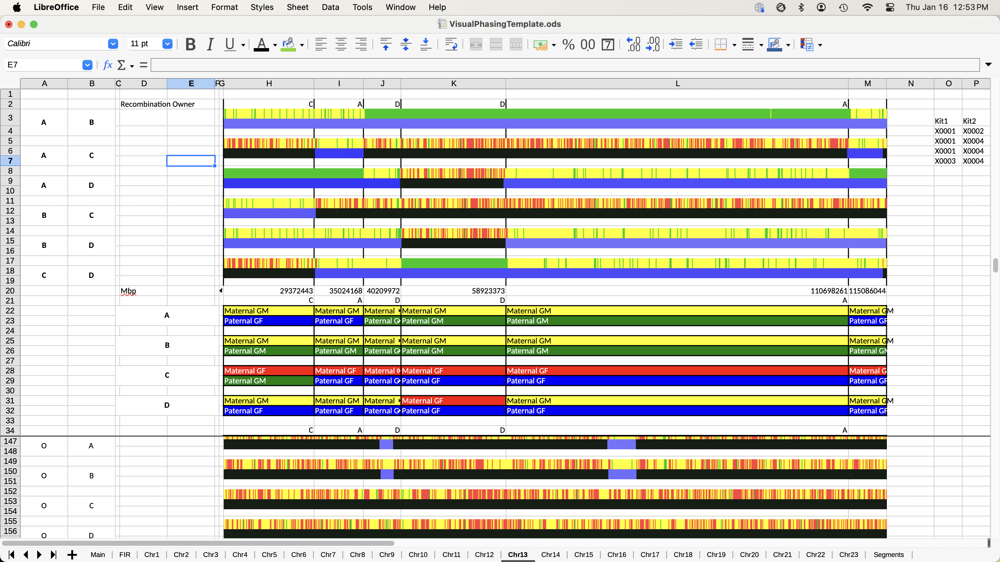

This LibreOffice spreadsheet allows the user to perform Visual Phasing of the graphs from GEDmatch or any other source of segment graphs. This assumes the user is familiar with the Visual Phasing process (not described here). LibreOffice Calc is available on a variety of Operating Systems, including Windows, Linux, and MacOS. GEDmatch is the most common source for segment images, but any other source will also work. Scripts are provided to assemble and name files from GEDmatch.
The graphs need to be organized in a specific way. The folder GEDmatchImages contains all of the graphs. The graphs should be named kit1_kit2_Chromosome_Number.gif . For example, for the 1st image of Chromosome 13 for kit comparison of X0001 and C0001, the file is named X0001_C0001_13_1.gif . There are 2 images for each case, the 1st is the Full/Half/NoMatch image of the SNP match and the second is the validity of segment indicator for the SNP. The graph can be linear in SNP or linear in Mbp. If they are linear in Mbp, there is a macro to determine MBP based on the width of the spreadsheet cell. This will not work for GEDmatch images since those images are not linear in Mbp.
The first step to use this spreadsheet is to generate all of the GEDmatch graphs. The user runs the One-to-One Autosomal and the One-to-One X tools in GEDmatch for each pair of kits (both Sibling and Cousin) and saves the Web Page from the browser into the working directory. This working directory also contains the spreadsheet. For 4 siblings, this is 6 cases.
For the SampleData case, the folder looks like:
The contents of each of the folders is the graphs for that match case. Note that the naming is not the same as what this tool needs. An example is:
Once the GEDmatch data is ready, the user then runs the command line command
make GEDmatchImages
to create the new folder and copy all of the graphs to this new folder. Then the user runs the command line command
make rename
to rename the graphs. This also makes similar files with the kit1 and kit2 order reversed. The consolidated GEDmatchImages folder which contains the graphs that are used by the spreadsheet after the graphs have been renamed is:
If a new kit is added, the user enters the command
make clobber
(to remove the existing GEDmatchImages folder) followed by repeating the two above commands. This will recreate the GEDmatchImages folder with the new kit(s).
The first step is to fill the Sibling and Cousin Tables with the kit information.
Once that is done, the user clicks the Reset Sheets button to remove any existing Chromosome sheets and to recreate based on the data in the Sibling Table. The results are:
Chromsome 13 looks like:
The next step is to load the images to each of the Chromosome sheets. Click the Load Images button. The result for Chromosome 13 is:
Then proceed with moving the cell borders to identify recombination points and populate the owner of the recombination points. And start identifying the grandparent for each of the siblings segments.
To rename the grandparent in the painted area, use the replacePaintValue macro. Enter the existing text string in cell A1 of the sheet. Enter the new string value in cell A2. Then run the macro. This will replace all occurrences of the string in the painted area.
To start the painting process over, run the macro resetPaintValue. This will remove all of the strings in the painted area.
To add the Cousin graphs, go to the Main sheet and press the Show Cousins button. This adds all of the Cousin graphs to each of the Chromosome sheets. To omit a Cousin graph, put any character in the skip (1st) cell in the Cousins table.
When visual phasing is complete, the image should be something like the below.
FIR data can be generated in GEDmatch for each of the Sibling pairs. This is OPTIONAL. This data can be copied into the FIR sheet by clicking the Load FIR Data and then used as a reference when identifying the Mbp for a recombination point.
Chromsome 13 looks like:
After the recombination points have been identified and the Mbp for each has been entered, the final sheet should be:
Segment lists can be generated by clicking the Generate Segments button on the Main sheet. For each Chromosome sheet, all of the segments that have an Mbp value and a segment grandparent labeled, an entry will be added to the Segment sheet. This is an OPTIONAL process.
Remove all Chromosome sheets and regenerate Chromosome sheets. This should be done whenever there are changes to the Sibling Table.
Loads all Chromosome sheets with the Sibling graphs. This needs to be done after resetting the Chromosome sheets.
Load the Cousin data for each Chromosome sheet.
Remove the Cousin data for each Chromosome sheet.
Create a new sheet labeled Segment and fill it with any segment information that has been defined. This data can be used in DNApainter, for instance.
To regenerate all of the painted area colors if the format in the Main sheet Grandparent Table has changed. This is tied to a button in the Main sheet
Load the FIR data for each Chromosome sheet.
Remove all of the text in the painted area. This allows the user to start the visual paint process again
Replace an existing text string (like G1) in the painted area with a new text string (like M1)
Delete all Chromosome sheets
Generates the recombination Mbp value assuming the graphs are linear in Mbp. The graphs generated by GEDmatch are not, so this is not useful for these. There are other applications that may generate graphs which are linear and can be used. In this case, the max Mbp need to be entered in Row 1, second Column after the painted area. If this is blank, the cell is painted red to indicate the error and the Recombination values are generated as a percentage.